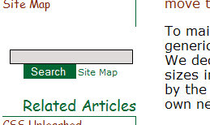
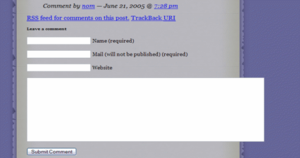
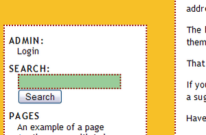
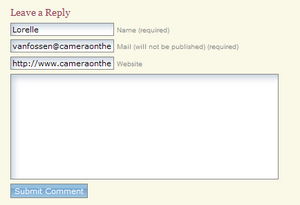
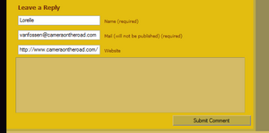
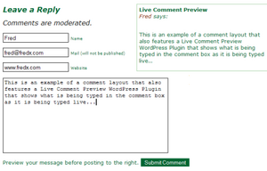

Every theme for WordPress has at least two forms: Search and Comments. If you are developing a WordPress Theme or want to make some adjustments to your Theme's forms, you can customize your forms to match the overall Theme.
WordPress Form Styling
Web Form styling is one of those areas of web page design that is part CSS and part browser influenced. The W3 Consortium sets standards that say that form elements can be styled, but browsers tend to have their own "opinions."
We will focus on what WORKS. We will look at what can be done to style forms in WordPress and how to customize your form elements in almost all OS/browser combinations (with the possible exception of Safari/Camino, and, in one case, Opera).
 Simple Search Form Example
While the
Comments and Search Forms in the Classic and Default Wordpress Themes are similar, we will look specifically at the Default Theme's form, since it is the Theme most WordPress Themes tend to be based upon.
Setting the styles for the specific "form element" will apply that style to ALL the forms within your WordPress site. Since there is the search and comment forms, you may want these to look different, so use the style reference ID to specify which element looks like what in which form.
Once you have styled your forms, it is time to test them. Check them in as many browsers as possible and be sure to validate the code.
Things to Consider
Here are a few other things to consider as you style forms in WordPress.
- Browser Form Variances
- Buttons and other forum elements look different in almost every single OS/browser combination, and the level of control you have styling that button differs just as much between the different OS/browser combinations. For instance, Safari and Camino Mac users will see the same capsule shaped white/gray button, no matter what you define in your CSS. A background color/text color combo that works in almost any other OS/browser does not give you anything but that same white/gray capsule shape with black print in Safari or Camino. The good news is you will always get a workable button even if it looks unattractive.
 Example of a comment form that is wider than its container
- Column Width
- Forms use input boxes and textareas allowing users to enter information into the forum. These are sized from within the style sheet and in the HTML/XHTML of the template files. Their width may work without consideration of the width of the parent container. This means that if you are using the search form in your sidebar at a width of 200px and your sidebar's width is set to 150px, you have a problem. Same applies to comment forms. The width of the input boxes and textarea needs to be less than the width of the container in which it resides.
- Padding and Margins
- Within many of your form styles, you may add padding and margins to position or create space around the forms. Make sure you add those measurements to your width and compare it with the column width of the container the form sits in. For example, a margin of 5px plus a padding of 10px adds 30px (add both sides!) to the 100px wide input box, bringing it to a total of 130px. Comprae this with the 150px width of the sidebar container, and it will fit. Change the width of the sidebar and that narrow margin of "safety" might be threatened and your layout may turn ugly.
- Understand the Parent/Child Releationship of CSS
- The CSS Parent/Child relationship basic states that whatever styles are in the parent container will be passed down to the child container, unless specifically overwritten. For example, if you set your style for the <small> tag for your entire site, used within the Post Meta Data Section, and elsewhere, that style will also be found in the comment form. If you want that particular tag's font size or look to be changed, you need to give it its own style such as #commentform small. Or if you want to control the styles for each of the uses of the <small> tag in your comment form, giving each a unique look, you could use <t>#author small</tt> and #email small and so on, overriding the parent styles for that tag.
Before making modifications, backup your WordPress Theme Folder.
The Search Form
The search form is found within the searchform.php. Here is a list of the individual areas of the search form which may be styled by default. You may add style classes to gain more control over the look of your search form.
<li id="search">
<label for="s">Search:</label>
<form id="searchform" method="get" action="/index.php">
<div>
<input type="text" name="s" id="s" size="15" /><br />
<input type="submit" value="Search" />
</div>
</form>
</li>
The styles found for the search form are in the styles.css style sheet file in your WordPress Theme. The search form itself sits within a list in the sidebar. While the form itself begins after the label, it is still a part of the form. Depending upon the Theme author's design needs, the search section may or may not include:
Journalized Winter Theme Search Form Example
- #search
- The overall style for the search form.
- #search label
- Used to style the label tag, if necessary.
- #searchform
- Used to style the form itself. The #searchform can be used to define a width for your form, a background color and/or image, fonts, font sizes, and borders. Setting width for a form can be tricky. If the column that forms sidebar.php is a fixed width, then define a width for searchform that is just a bit narrower than the column it resides in. And use the dimension type and measurement. If the column is 150px wide, make your searchform 146px. If the column width is defined in em, use that.
Padding and margins can also be added to the searchform style, but take care. The measurements are cumulative. If the searchform width is 146px, you only have 4px to add margins and padding before you break the width of the sidebar.
- #search div
- This unlabeled div is a child container of the parent container search and may be styled from within that selector.
 Garden Log Theme Search Form Example
- #searchform input
- To style the input area for the search, this selector combination will work. There is also another style reference of #s that may also be used in addition or as a replacement for this style. It is used to style the background color, font, font-size, and font color, and so on for the input box the user types in. Safari will not recognize background color or (text) color, and will always show the text input box as white with black text. All browsers seem to support font-weight declarations, and all seem to respect font-family. Internet Explorer 5 for the Mac and Safari do not recognize text-align declarations. Font size is best when defined as percentage, though different browsers tend to vary this a little.
Padding and margins can be used here, but again, these are dependent upon the browser's interpretation of the measurements. The input box's width is critical to the amount of space the user has to enter their search keywords. It may be defined as a pixel or percentage based width and must "fit" within the width of the sidebar.
- #searchform input#s::-webkit-input-placeholder
- #searchform input#s::-moz-placeholder
- #searchform input#s:-moz-placeholder
- #searchform input#s:-ms-placeholder
- To style the search form input area HTML5 placeholder in a theme like Twenty Eleven (or its child theme), use the above selectors. Note that these are browser specific (for Webkit based browsers, Firefox and IE), that there are two different methods for Firefox (with one colon for FF versions 4-18 and with two colons for FF versions 19+) and must be used separately for each of these in the CSS file. To style the placeholder when the input is selected by the user, use #searchform input#s:focus::-webkit-input-placeholder, #searchform input#s:focus::-moz-placeholder, #searchform input#s:focus:-moz-placeholder, and #searchform input#s:focus::-ms-input-placeholder, respectively. More information on HTML5 placeholders can be found here and here.
- #searchsubmit
- Used by the Default Theme, this selector may be used to style the search or submit button. Buttons are where browser support varies the most, though styling a button will always give you a workable button, even if the style is not supported in a particular browser. Here are some tips regarding the various browsers:

Safari (OS X)
- All browsers except Safari and Camino seem to support background-color and (text) color, though the buttons will look very different from browser to browser.
- Opera changes the button shape if you apply a background color.
- Opera Mac and Win, Safari, and Camino do not support any border styling on buttons.
- All browsers except Safari support font-family and font-weight.
- It is recommended that you not define a width on this at all, since it will be as wide as the text that fills the button, no matter what browser-defined font size the user picks.
The comments form are found within the comments.php or commentspopup.php. In the Default WordPress Theme, they look like this when viewed as a generated web page:
<h3 id="comments">One Response to "Hello world!"</h3>
<ol class="commentlist">
<li class="alt" id="comment-1">
<cite>
<a href="http://example.org/" rel="external nofollow">Mr WordPress</a>
</cite> Says:<br />
<small class="commentmetadata">
<a href="#comment-1" title="">Date and Time</a>
</small>
<p>Hi, this is a comment.</p>
</li>
</ol>
<h3 id="respond">Leave a Reply</h3>
<form action="http://example.com/blog/wp-comments-post.php" method="post" id="commentform">
<p>
<input name="author" id="author" value="" size="22" tabindex="1" type="text">
<label for="author">
<small>Name (required)</small>
</label>
</p>
<p>
<input name="email" id="email" value="" size="22" tabindex="2" type="text">
<label for="email">
<small>Mail (will not be published) required)</small>
</label>
</p>
<p>
<input name="url" id="url" value="" size="22" tabindex="3" type="text">
<label for="url">
<small>Website</small>
</label>
</p>
<p>
<small><strong>XHTML:</strong> You can use these
tags:....</small>
</p>
<p>
<textarea name="comment" id="comment" cols="100" rows="10" tabindex="4">
</textarea>
</p>
<p>
<input name="submit" id="submit" tabindex="5" value="Submit Comment" type="submit">
<input name="comment_post_ID" value="1" type="hidden">
</p>
</form>
</div>
 MX4 Theme Comments Form Example
While individual sections of the comments feature styling reference, the Default Theme has no general comment division or group style reference, though one could be easily added.
The #commentform is the wrapper for the whole form, though the styles above it may influence the #commentform as part of the CSS parent/child relationship.
As with the search form, you can style this with either a background color or image, you can add borders, and you can change text color, font-family, font weight, text decoration, etc. You are better off defining width on each of these layout elements. Remember, like the search form, the width of the column in which the comments reside influences the width of the comments. If they are fixed, they may overlap the sidebar.
- h3 #comments
- Styles the <h3> tag for the "number of responses to the post" heading.
- #commentlist ol
- Styles the "ordered list" of the comments list.
- .alt li and #comment-n
- The comment list items have two style references. The first one is the class alt and the second is the comment ID number signified here by the letter n. This allows them to be styled individually or through the use of WordPress Plugins.
- cite
- The tag cite frames the "Name says:" and link to the comment author's URL.
- .commentmetadata small
- The <small> tag has a class of commentmetadata which allows the date and time of the post to be styled.
- ol #commentlist p
- Styles the paragraph within the ordered list of comments.
- #respond h3
- Styles the heading for "Leave a Reply."
- #commentform
- Style reference for the overall "form" for inputting comments. Each input area has it's own ID.
- #author
- ID reference for the comment author's input area.
- #comments small
- The <small> tag is used in several places in the Classic Theme. This usage surrounds the text in the comment submit form and the text for the list of tags that can be used in the comment.
- #email
- ID reference for the comment author's email.
 Impressionist Theme Comment Form Example
- #url
- ID reference for the comment author's URL.
- #comment
- ID reference for the comment input textarea. It does not style the final generated comment, just the input box.
- #comment #submit
- There are two submit buttons in the Classic Theme, for search and comment submissions. This is the submit comment button. The submit form field is the same type of submit button you styled in the search form. The same issues and rules apply, and the same problems may occur crossbrowser.
The number of rows and columns that define the size of the comment textarea box can be set in the template files comments.php or commentspopup.php. You can change this here:
<textarea name="comment" id="comment" cols="100" rows="10" tabindex="4">
</textarea>
Other Form Elements
Dropdown Lists
Some WordPress form plugins may require a form with a dropdown box. Dropdown boxes have some styling limits. Two things you need to be aware of:
- Dropdown Form Width
- Styling dropdown box widths, as with text boxes, will be easier if you use the width unit that has been used to define the column in which the dropdown box will reside, so if its a fixed width column defined in pixels, use pixels to define the width of your dropdown box.
- Dropdown Form Line Height
- To allow the box to stretch in height depending on the browser-defined font size it is best to define a line-height in em in your dropdown box. If you do not, the height of the box will remain short no matter how tall the font size. Start with 2em, then experiment in different browsers and with different browser defined font sizes until you're happy with it.
 Comments example using Live Comment Preview Plugin
When styling your comments, consider adding a Live Comment Preview WordPress Plugin or php script. You can find several plugins on the
Comments Plugins List.
Space to accommodate the live comment preview area needs to be taken into consideration within your comment structure. Some Theme authors add the preview section above or below the comment form. Others make their comment input and textarea boxes narrow and set the preview area to the side or next to the name, email, and URL input boxes.
The comment preview styles can also be customized to match your overall theme, so check through the plugin author's documentation to determine which tags and CSS references are used in the plugin.
Resources

{kind=link}
{kind=link}
{kind=link}
{kind=link}
{kind=link}
{kind=link}
{kind=link}
{kind=link}
{kind=link}